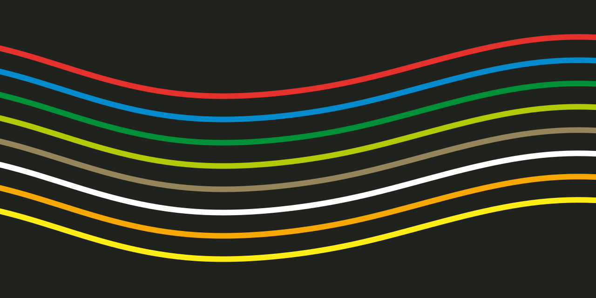
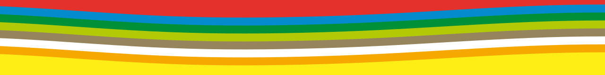

Colour with purpose
Vivid accents. Deliberate combinations.
A house style for Alan O Cinneide Software BV.
Optimistic colour. Order with a little movement.
A little retro.
A lot of forward.
Flowing colour. Clear structure. Inspired by Munich ’72, Moscow ’80 and the original business card.
Vivid accents. Deliberate combinations.
Clear grids. Generous margins.
Smooth movement. Then stillness.
An optimistic spectrum.
Grounded by quieter tones.
From the original artwork, converted to sRGB. Click to copy.
Ink with lime, yellow or orange. Company-facing headers and footers carry the full eight-colour spectrum. Lime alone is not enough.
Ink on light. White on ink. Other colours are graphic accents.
Ideas take
shape.
Give ideas room to breathe. Make the useful thing easy to find.
 New vector interpretation / 2026
New vector interpretation / 2026Organic sinusoids. Gentle harmonics. A connection to my audio roots.
Keep text on a quiet surface.

The original PNG is preserved with its Display P3 profile. The SVG above is a new interpretation, not a recovered print file.
Download original PNG ↓
In good company
What comes nextBold contrasts, constructed forms and the optimism of a shared future. These posters are reference points for that feeling.
A coordinated identity across posters, signs and objects. Clear structure gives bright colour room to work.
Organic sinusoids: a fundamental wave with gentle harmonics. The flowing bands connect the identity to my audio roots.
Get the signal SVGHistorical references link to their sources. Our flowing graphics are original SVGs.
Ideas in motion.
Change a control. Feel it respond.
One pass, 1.8 seconds. Never an endless loop.
Gym Circuit Logger: native range control, colour settling and sliding panels. Mise en Place: quick button response. Reinterpreted in this house style.
From a first impression
to a bigger picture.
Proposed compositions. Ready for your feedback.
A place for clear thinking, creative problem-solving and software made with care.
Get in touchLive HTML templates. Open any slide to present. Sample content and illustrative data.
65 × 65 mm / Kraft stock reference
New concept. Print colour and paper need proofing.
A system to build on.
And make your own.
Company-facing websites frame both header and footer with the complete spectrum, including on phones. Keep text on quiet surfaces. Other visual details remain a working proposal.
Give design feedback